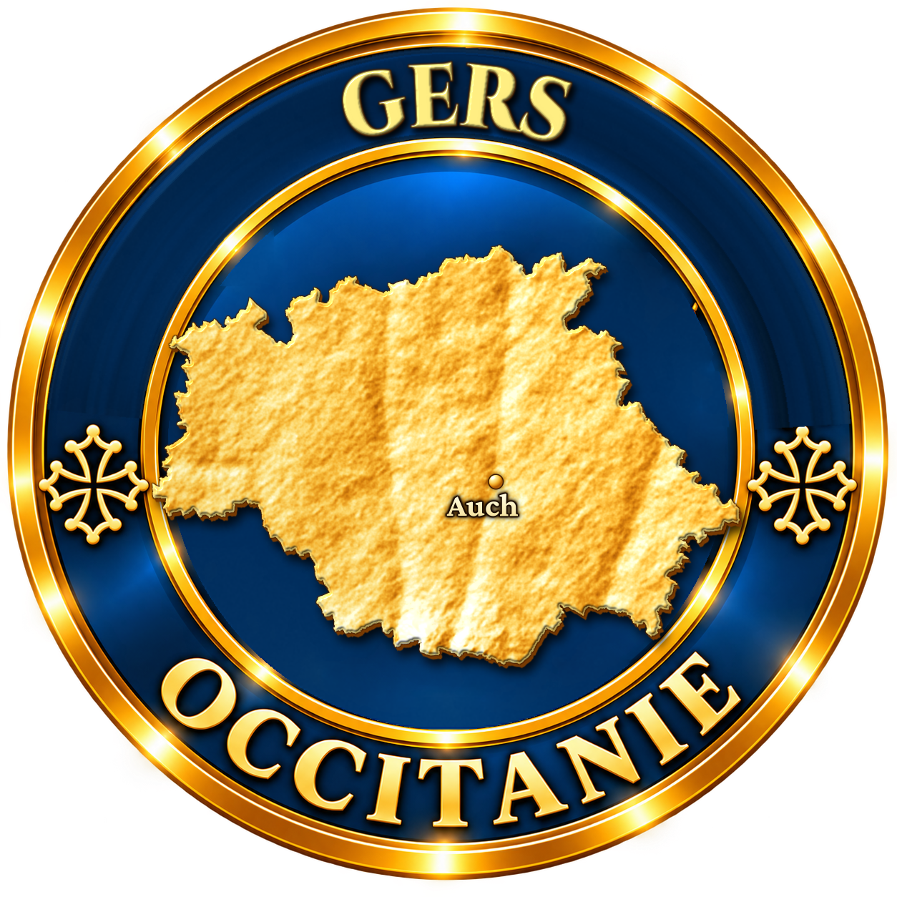
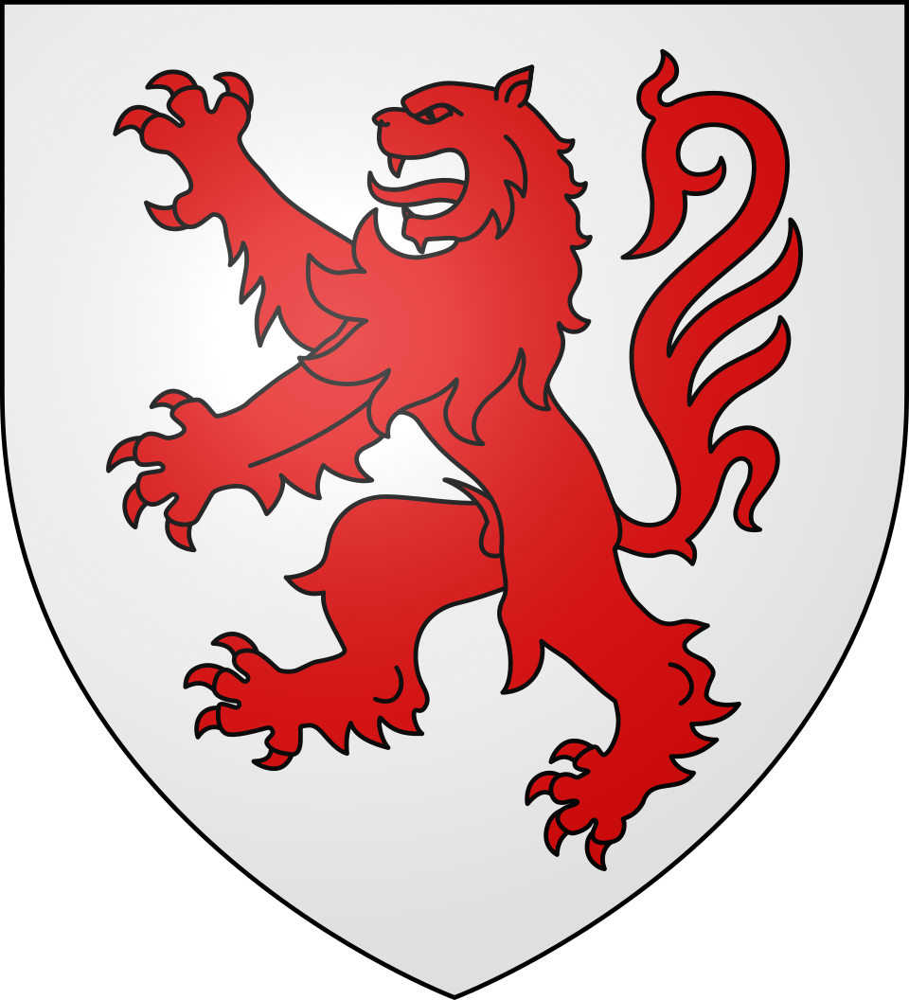
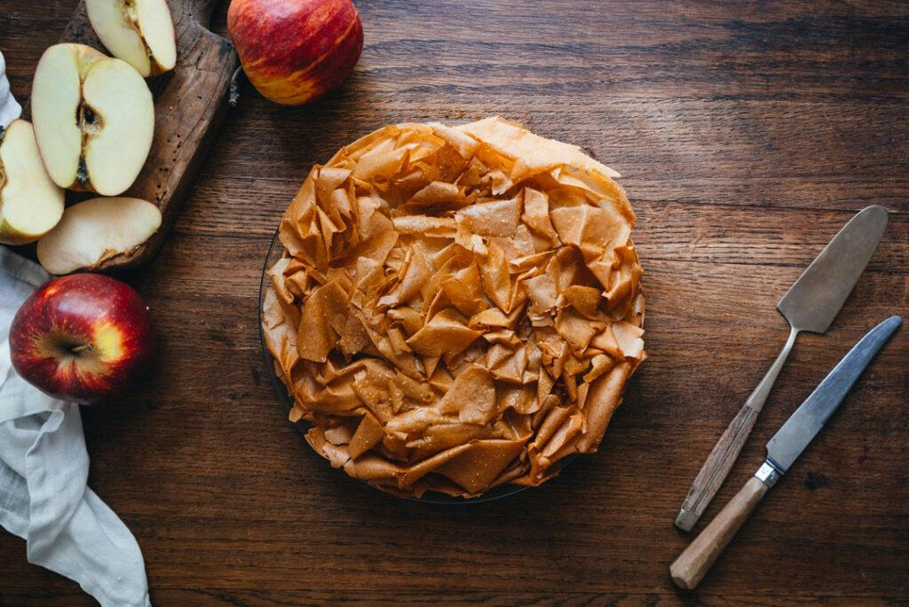

Pas une goutte d'anis dans ce pastis-là. En Gascogne, le mot désigne un dessert de pâte étirée si fine qu'on lit le journal au travers, garni de pommes macérées dans l'armagnac et couronné de feuilles froissées et dorées. Un savoir-faire de patience, transmis de mains en mains.
Dans le Gers, le mot pastis n'a rien à voir avec l'apéritif marseillais. Il viendrait du vieux français ou de l'espagnol pastilla, et désigne une tourte ou un gâteau. Selon les endroits, on l'appelle aussi croustade (dans le Gers et le Lot-et-Garonne) ou tourtière (dans les Landes et en Béarn) : c'est la même famille de desserts, à quelques variantes près.
Sa particularité tient dans la pâte. Faite de farine, d'eau, d'œuf et d'un peu de matière grasse, elle est étirée à la main sur une grande table recouverte d'un drap, jusqu'à devenir presque transparente. On l'a surnommée le « voile de la mariée ».

La tradition fait remonter cette technique de pâte très fine à la présence des Maures en Espagne, qui l'auraient transmise de l'autre côté des Pyrénées. On rapproche le pastis de la pastilla d'Afrique du Nord, ou de la pâte filo. Cette filiation, souvent racontée, n'est pas formellement établie. Ce qui est certain, c'est que la pâte étirée fait partie du patrimoine du Sud-Ouest depuis des siècles.
Autrefois, le pastis était réservé aux fêtes religieuses et aux grands événements familiaux. La pâte était badigeonnée de graisse d'oie, appliquée avec une plume ; le beurre l'a remplacée depuis. Les pommes, ou parfois les pruneaux d'Agen, sont arrosées d'armagnac, l'eau-de-vie gasconne.
Plus la pâte est fine, meilleure est la croustade : c'est la règle d'or des pastissières gasconnes.
Étirer la pâte demande de l'espace, de la patience et beaucoup d'habitude. Aujourd'hui, peu de familles le font encore : le pastis se trouve surtout chez les pâtissiers et les artisans du Sud-Ouest, et parfois sur les marchés du Gers. À Gimont, une Maison du Pastis gascon fait découvrir la fabrication. Dans le Lot-et-Garonne voisin, Penne-d'Agenais et Tournon-d'Agenais fêtent chaque été leur tourtière.
Pommes, beurre, sucre caramélisé et armagnac : le pastis gascon appelle un vin moelleux du même terroir, avec assez d'acidité pour répondre au fruit.
Pacherenc du Vic-Bilh moelleux
AOP · Gers (32), Hautes-Pyrénées (65)
Le grand vin doux gascon : petit manseng et gros manseng donnent des notes de fruits confits et d'agrumes, avec une fraîcheur qui équilibre le sucre.
Floc de Gascogne blanc
AOP · Gers (32)
Un mélange de jus de raisin et de jeune armagnac : il prolonge le goût de l'eau-de-vie qui parfume les pommes.
Côtes de Gascogne moelleux
IGP · Gers (32)
Un vin doux plus léger, aux arômes de fruits exotiques, à petit prix et facile à trouver.
Jurançon moelleux
AOP · Pyrénées-Atlantiques (64)
Miel, ananas, épices douces : un classique avec les desserts aux pommes du Sud-Ouest.
Gers, Landes, Béarn, Lot-et-Garonne, Ariège : chacun a son nom pour ce dessert, avec de petites différences de pâte et de garniture.
La pâte doit être si fine qu'on voit ses doigts au travers. Pour la croustade, on la laisse sécher avant de l'utiliser.
Avant le beurre, les feuilles étaient graissées à la graisse d'oie, étalée délicatement à l'aide d'une plume.
À Penne-d'Agenais, un jury désigne chaque été la meilleure tourtière, présentée ensuite à la foule par le groupe folklorique local.